advanced technology meets beautiful design
from the sustainably aluminium body to the elegant technological core,
every detail in lix combines beautiful engineering and meticulous craft.

filament input
power socket
ø 0.59 inch
led heat indicator
6.29 inch
anodized unibody aluminium
ø 0.47 inch
speed control buttons
ø 0.31 inch
heating point ~ 392 °f
filament output